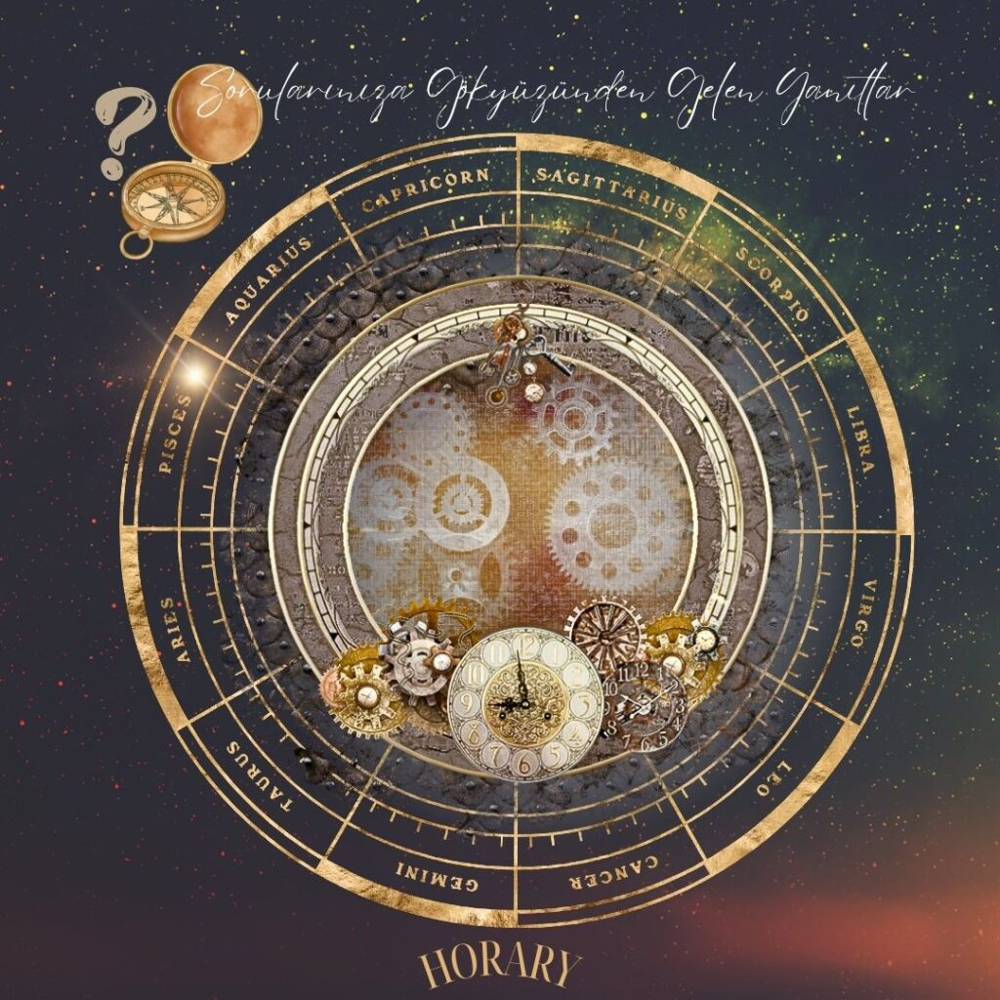
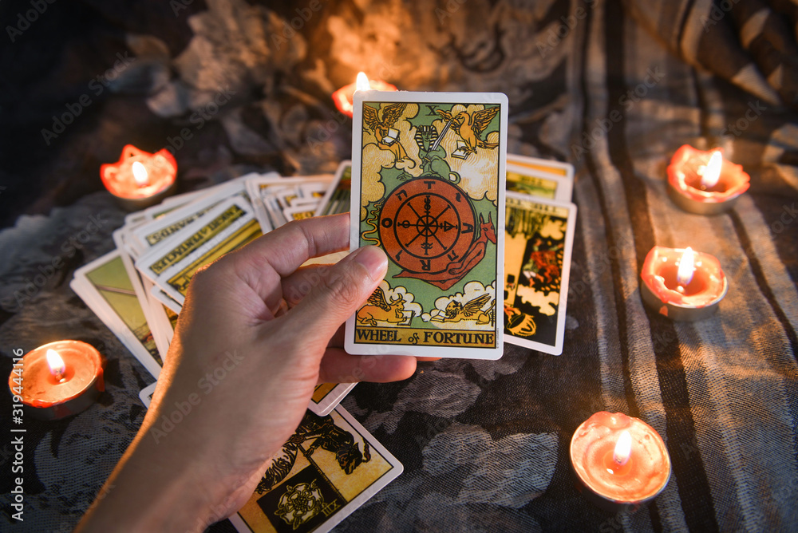

What is Horary Astrology?
Based on traditional techniques by William Lilly, Horary astrology seeks clear and immediate answers to specific questions by casting a chart for the exact moment the question is asked.

Based on traditional techniques by William Lilly, Horary astrology seeks clear and immediate answers to specific questions by casting a chart for the exact moment the question is asked.

Tarot cards share a profound connection with astrological symbols. Each card reflects the unique energy of different zodiac signs and celestial bodies.
